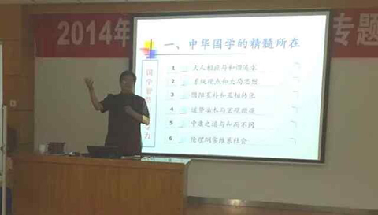

沟通不良的症结所在
张九元老师
来源：中华龙集团教育培训中心 点击:153次
职业生涯：
38年的职业生涯是这样度过的：6年政府公务员，8年大型国企中层管理者，4年小型国企法人代表，3年高校理论研究者，17年咨询公司顾问。
原创课程文章
沟通重要不重要？每人说不重要。但是，尽管很多人都认识了沟通的重要性，但事实是：沟通不良几乎是每个企业都存在的老毛病。企业的机构越是复杂，其沟通越是困难。往往基层的许多建设性意见未及反馈至高层决策者，便已被层层扼杀，而高层决策的传达，常常也无法以原貌展现在所有人员之前。沟通的持续恶化，就是高层还在煮酒论英雄，而底层的士气已经灰飞烟灭。
具体说来．管理沟通的硬伤集中在以下几个方面：
(1)信息仅仅被传递，但其中具体的意义却还没有被充分理解；
(2)沟通双方达成协议，往往被错误地认定为良好的沟通，实际上很可能只是双方真正意义上的沟通的开始；
(3)在不恰当的时候和不恰当的地点，沟通不恰当的话题；
(4)出于种种目的，将信息中某些成分有意识地过滤；
(5)沟通情绪化；
(6)运用不恰当的非语言性提示(如表情、身体语言等)；
(7)年龄、教育、文化的不同，沟通双方产生语言、语汇、语气上的差异。
这些硬伤你要是不注意，沟通就不可能良好。君不见，我们网友中间，商友中间不也是有人打得不可开交吗？
成功的企业背后一定有规范性与创新性的企业管理制度在规范性的实施，规范性与创新性的企业管理制度要依靠高绩效的团队去规范性地实施。而这些团队效能的高低与其沟通的效能成正比。
沟通是有效管理的重要途径和关键条件，不把沟通搞好，效率是不会高的，效益也是不会好的。
沟通是指两个或多位个体或群体之间交换信息和分享思想及感情的过程，是指一位组织成员（或团队）向另一成员（或团队）传递决策前提信息的过程。沟通对于管理人员的重要性越来越显示的强烈。无论计划、组织、领导、决策、监督、协调等管理职能，都须以有效的沟通作为前提。沟通过程构成了组织中大多数功能的基础，对组织效能有关键性的影响。
管理沟通的流程具有三个方向特征：上行沟通、下行沟通和水平沟通。上行沟通和下行沟通是组织层次间的沟通：上行沟通为下级向上级的沟通，下行沟通是上级向下级的沟通；而水平沟通则是跨部门的沟通。组织中这三类正式沟通的总体模式就形成了一种沟通网络。每个组织都具有与其组织结构和组织文化相一致的正式沟通网络。
另外，随着我国改革开放的迅速发展，跨文化沟通成为日益流行的管理沟通方式。管理心理学的研究也越来越重视跨文化沟通，许多研究围绕中外文化背景下的人际沟通特点进行。
在组织沟通中存在一些主要的障碍，这些障碍较多发生在相同组织的各类人员之间或者不同组织之间。对于组织沟通中可能遇到的偏差，需要从多方面采取改进措施，除了改善沟通信息本身的质量，还需要改进对于他人信息沟通的理解。
改进组织沟通的主要途径是增强沟通技能，就是针对管理者沟通问题进行贴近实际的教授理念和方法。
通过学习，我们可以正视沟通网络建设，改进存在问题，提高沟通效能，保证多向信息能得到更有效的沟通。从而保证团队效能，造就卓越团队。
找到症结，避开硬伤，你的沟通才能逐渐好起来。试试吧！伙计。